Modulo 4: Introducción a Streamlit#
¿Qué es Streamlit?#
Streamlit es un marco de trabajo de código abierto, gratuito y altamente eficiente, diseñado para la creación rápida de aplicaciones web interactivas enfocadas en aprendizaje automático y ciencia de datos. Desarrollado en Python, Streamlit está pensado específicamente para científicos de datos e ingenieros de machine learning, quienes, sin ser necesariamente desarrolladores web, necesitan una herramienta sencilla y accesible que les permita construir visualizaciones y aplicaciones sin invertir semanas en aprender tecnologías web complejas.
Con Streamlit, puedes desarrollar aplicaciones web atractivas y funcionales utilizando solo unas pocas líneas de código, lo que facilita la visualización de datos y la interacción con parámetros esenciales para los modelos, todo en un entorno que prioriza la simplicidad y la rapidez en el desarrollo.
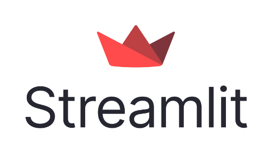
¿Por qué los científicos de datos deberían utilizar Streamlit?#
Lo más destacado de Streamlit es que no necesitas conocimientos previos de desarrollo web para comenzar a crear tu primera aplicación. Si te dedicas a la ciencia de datos y quieres implementar tus modelos de forma rápida, sencilla y con solo unas pocas líneas de código, Streamlit es una opción excelente.
Una característica clave para el éxito de cualquier aplicación es ofrecer una interfaz de usuario intuitiva y eficiente. Muchas aplicaciones modernas, que gestionan grandes volúmenes de datos, se enfrentan al desafío de desarrollar interfaces atractivas sin procesos complicados. Aquí es donde Streamlit brilla: esta biblioteca de Python de código abierto permite a los desarrolladores crear interfaces interactivas y visualmente atractivas en muy poco tiempo.
Streamlit es la forma más sencilla de convertir tu código en una aplicación web, especialmente si no tienes experiencia en desarrollo frontend:
No necesitas conocimientos previos de front-end (HTML, JavaScript, CSS).
En lugar de pasar días o meses desarrollando una aplicación web, puedes crear una aplicación de machine learning o ciencia de datos impresionante en tan solo unas horas, o incluso minutos.
Es compatible con una amplia gama de bibliotecas de Python como pandas, matplotlib, seaborn, plotly, Keras, PyTorch y SymPy (incluyendo soporte para latex).
Requiere menos código para construir aplicaciones sorprendentes.
El almacenamiento en caché de datos simplifica y acelera los cálculos, haciendo que el rendimiento sea más eficiente.
¿Cómo utilizar Streamlit?#
Debemos crear un ambiente exclusivamente para
streamlitusando anaconda powershell prompt.
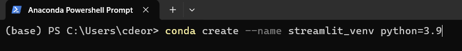
Activamos el ambiente de
streamlit_venv
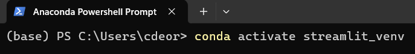
Escriba este comando en la terminal para instalar Streamlit,
pip install streamlit
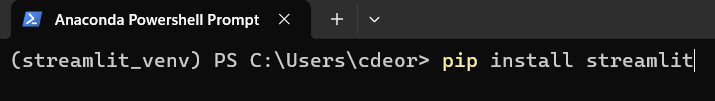
Si queremos ver que esta instalado correctamente, Pruebe en el terminal lo siguiente
streamlit hello
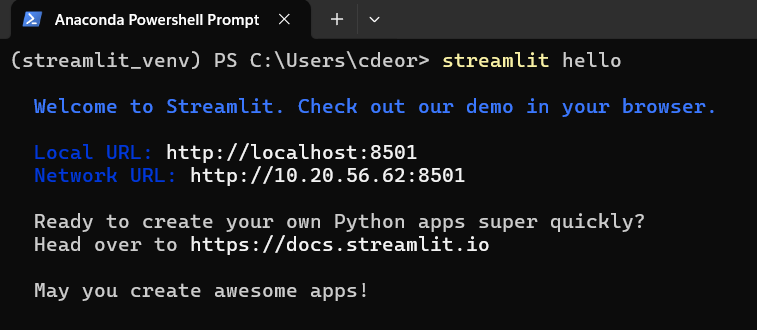
Observación
Cuando ejecutas el comando streamlit hello por primera vez, Windows puede mostrar una advertencia o mensaje de seguridad relacionado con el firewall de Windows Defender. Esto sucede porque Streamlit levanta un servidor local, y el sistema operativo detecta que está intentando establecer conexiones a través de redes. Windows te pregunta si deseas permitir que la aplicación use redes públicas o privadas.
Aquí te doy algunas pautas para proceder de forma segura:
Red privada: Si estás en casa o en una red confiable, como la de tu trabajo, selecciona la opción de red privada. Esto permitirá que Streamlit se comunique con otros dispositivos en la misma red local sin restricciones.
Red pública: Si estás en una red pública (por ejemplo, en una cafetería o aeropuerto), puedes desmarcar esta opción para evitar que Streamlit exponga información o se comunique en redes que pueden no ser seguras.
Si ves la advertencia de Windows Firewall:
Marca la casilla para permitir que Streamlit funcione en redes privadas (desmarca la opción de redes públicas si no es necesario).
Luego, haz clic en permitir acceso.
Esto le permitirá a Streamlit ejecutar sin problemas su servidor local en redes privadas.
Además, cuando escriba este comando en la terminal, la página siguiente debería abrirse automáticamente:
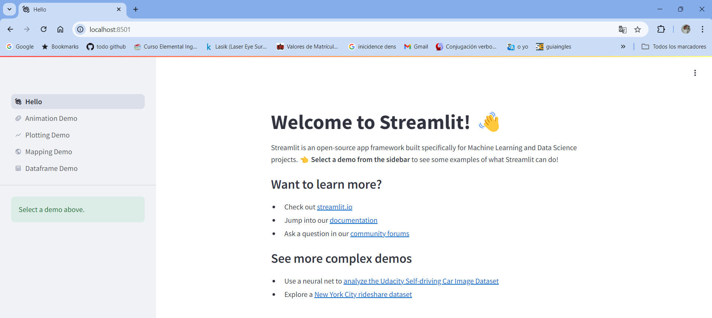 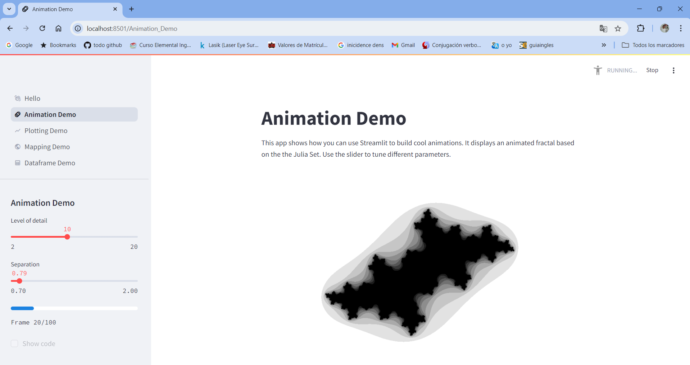 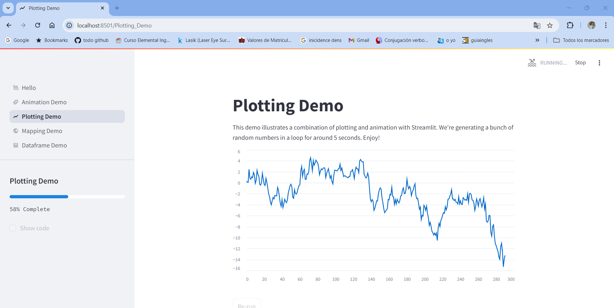 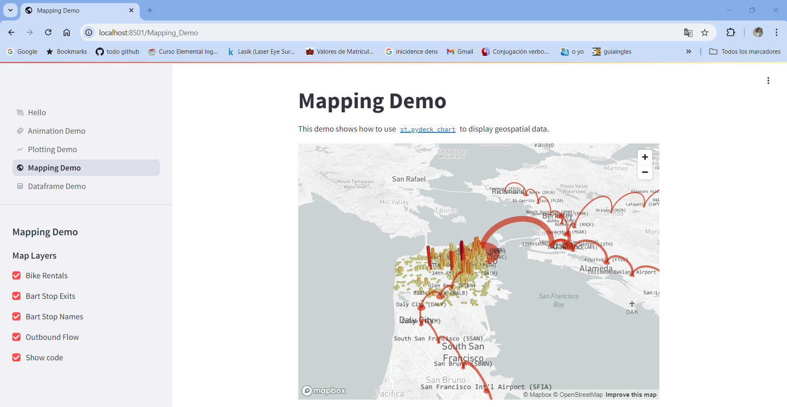 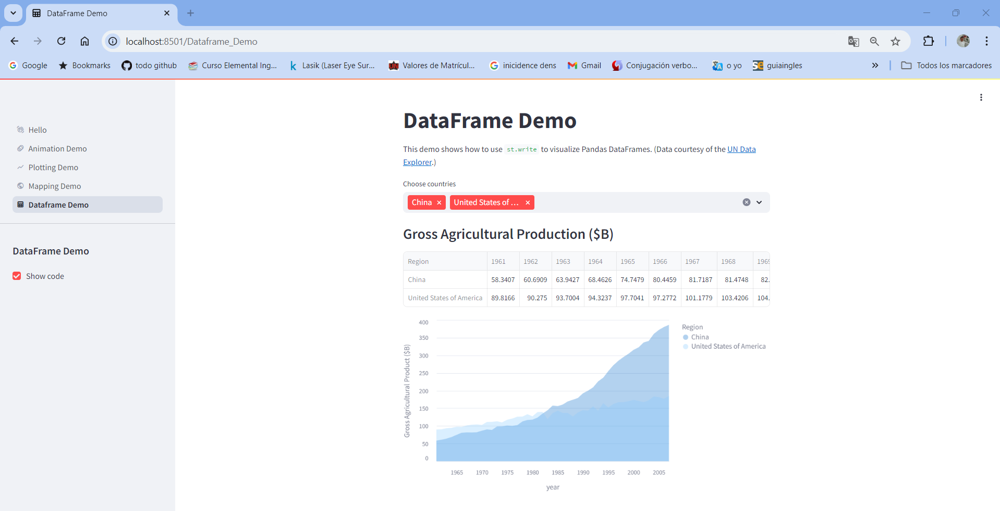
Guía paso a paso para la creación de una aplicación con Streamlit#
Una explicación paso a paso más detallada para la creación de la carpeta app y el uso de Streamlit con un script en Python llamado app.py.
Creación de la carpeta app#
Para organizar tu proyecto, es importante crear una carpeta donde se alojarán todos los archivos relacionados. Sigue estos pasos:
En Windows
Abre el Explorador de archivos.
Navega hasta la ubicación donde deseas crear tu proyecto (por ejemplo, el escritorio o una carpeta específica).
Haz clic derecho en un espacio vacío.
Selecciona la opción Nuevo > Carpeta.
Nombra la carpeta como
app.
En macOS o Linux
Abre la terminal.
Navega hasta la ubicación donde deseas crear tu carpeta usando el comando
cd. Por ejemplo:cd ~/DesktopCrea la carpeta con el siguiente comando `mkdir app
Apertura de la carpeta en el editor de código#
Tomando el editor de código de Visual Studio Code (VSCode)
Abre
VSCode.Haz clic en
File > Open Folder....Selecciona la carpeta recién creada llamada
appy haz clic en Select Folder.
Creación del archivo app.py#
Pasos para VSCode
Dentro de la carpeta
app, haz clic derecho y selecciona Nuevo archivo.Nombra el archivo
app.py.
Escritura y ejecución del código en app.py#
Abrimos el archivo app.py y se escribe el código en Streamlit para empezar. Y despues en la terminal de anaconda powershell, escribe lo siguiente para la ejecución streamlit run app.py
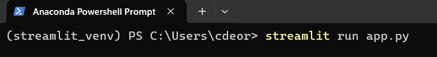
Los comandos de Streamlit son fáciles de escribir y comprender. Con un simple comando, podrá visualizar textos, elementos multimedia, widgets, gráficos, etc.
Mostrar textos con Streamlit#
Al principio, veremos cómo agregar texto a tu aplicación Streamlit y cuáles son los diferentes comandos para agregar textos.
st.write(): Esta función se utiliza para agregar cualquier cosa a una aplicación web, desde cadenas formateadas hasta gráficos en figuras de matplotlib, gráficos de Altair, figuras de plotly, marco de datos, modelo Keras y otros.st.title(): Esta es una función que te permite agregar un título a tu aplicación web.st.text_input(): Esta función se utiliza para crear un cuadro de texto donde el usuario puede escribir.
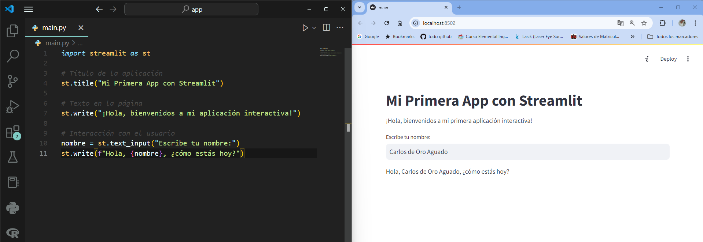
st.header(): Establece el encabezado de una sección. Es ideal para crear encabezados que se ven más grandes y con un formato destacado en tu app, pero menos prominente que un título.st.markdown(): Establece un markdown. Te permite escribir texto con formato usando el lenguaje de Markdown. Puedes usar negritas, cursivas, listas, enlaces, etc.st.subheader(): Establece el subencabezado de una sección. Es similar ast.header(), pero con un tamaño más pequeño, perfecto para subsecciones dentro de un encabezado.st.caption(): Escribe un título o una pequeña descripción. Se usa para agregar descripciones breves o pies de página, generalmente en un tamaño de fuente pequeño.st.code(): Establece un bloque de código. Es perfecto para mostrar bloques de código con formato. Puedes especificar el lenguaje del código para que se destaque la sintaxis.st.latex(): Mostrar expresiones matemáticas con LaTeX. Si necesitas mostrar ecuaciones o expresiones matemáticas, puedes usar LaTeX con esta función.
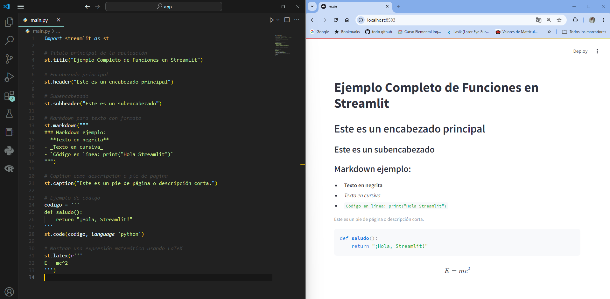
Visualización de imagen, vídeo o audio con Streamlit#
No encontrará funciones tan sencillas como las de Streamlit para mostrar imágenes, vídeos y archivos de audio. Veamos cómo mostrar archivos multimedia con Streamlit.
st.image(): Esta función se utiliza para mostrar una imagen.st.audio(): Esta función se utiliza para mostrar un audio.st.video(): Esta función se utiliza para mostrar un vídeo.
El código en python es:
import streamlit as st
# Título principal
st.title("Ejemplo de Visualización de Multimedia con Streamlit")
# Mostrar una imagen
st.header("Visualización de una imagen")
st.image("ruta_de_la_imagen.jpg", caption="Imagen de ejemplo", use_column_width=True)
# Reproducir un archivo de audio
st.header("Reproducción de audio")
st.audio("ruta_del_audio.mp3")
# Mostrar un vídeo
st.header("Visualización de un vídeo")
st.video("ruta_del_video.mp4")
Widgets de entrada#
Los widgets son los componentes más importantes de la interfaz de usuario. Streamlit tiene varios widgets que te permiten incorporar interactividad directamente a tus aplicaciones con botones, controles deslizantes, entradas de texto y más.
st.checkbox(): Casilla de verificación. Esta función devuelve un valor booleano:Truesi la casilla está marcada,Falseen caso contrario.st.button(): Botón. Muestra un botón y ejecuta una acción cuando se pulsa.st.radio(): Botones de opción (radio buttons). Permite a los usuarios seleccionar una opción de una lista.st.selectbox(): Cuadro de selección. Crea un menú desplegable que permite seleccionar una opción.st.multiselect(): Selección múltiple. Permite al usuario seleccionar múltiples opciones de una lista.st.select_slider(): Control deslizante de selección. Permite seleccionar valores discretos de un control deslizante.st.slider(): Control deslizante. Es un widget que permite seleccionar un valor numérico dentro de un rango.
import streamlit as st
st.title("Ejemplo de Widgets de Entrada en Streamlit")
# Checkbox
if st.checkbox("Mostrar texto adicional"):
st.write("¡Has marcado la casilla!")
# Botón
if st.button("Haz clic aquí"):
st.write("¡Has pulsado el botón!")
# Radio
opcion_radio = st.radio("Selecciona una opción de radio:", ["Opción 1", "Opción 2", "Opción 3"])
st.write(f"Opción seleccionada: {opcion_radio}")
# Selectbox
opcion_selectbox = st.selectbox("Selecciona una opción del cuadro desplegable:", ["Opción A", "Opción B", "Opción C"])
st.write(f"Opción seleccionada: {opcion_selectbox}")
# Multiselect
opciones_multiselect = st.multiselect("Selecciona varias opciones:", ["Opción 1", "Opción 2", "Opción 3"])
st.write(f"Opciones seleccionadas: {opciones_multiselect}")
# Select Slider
opcion_slider = st.select_slider("Selecciona un nivel:", options=["Bajo", "Medio", "Alto"])
st.write(f"Nivel seleccionado: {opcion_slider}")
# Slider
valor_slider = st.slider("Selecciona un valor numérico:", 0, 100, 25)
st.write(f"Valor seleccionado: {valor_slider}")
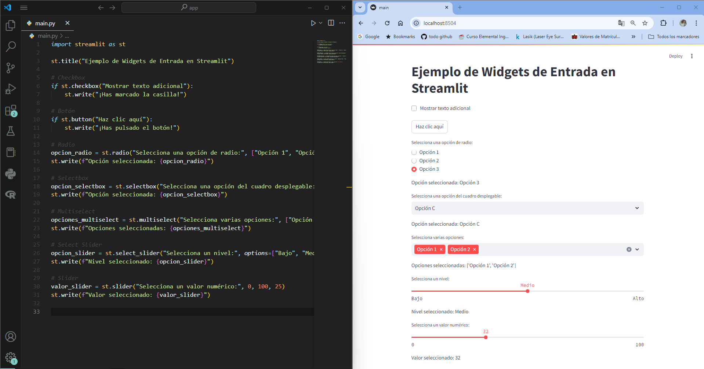
Observación
Estos widgets permiten captar información de los usuarios y usarla en tu aplicación de manera dinámica.
Puedes combinar varios widgets para crear flujos interactivos más complejos, como formularios o dashboards.
st.number_input(): Entrada numérica. Permite a los usuarios ingresar un número, con la posibilidad de especificar un rango y un valor predeterminado.st.date_input(): Entrada de fecha. Permite seleccionar una fecha desde un calendario.st.time_input(): Entrada de hora. Permite seleccionar una hora específica.st.text_area(): Área de texto. Permite ingresar varias líneas de texto, como un comentario largo o una descripción.st.file_uploader(): Cargar archivos. Permite a los usuarios cargar archivos desde su dispositivo. Puedes especificar el tipo de archivo permitido (como imágenes, PDFs, etc.).st.color_picker(): Selector de color. Permite seleccionar un color de una paleta.
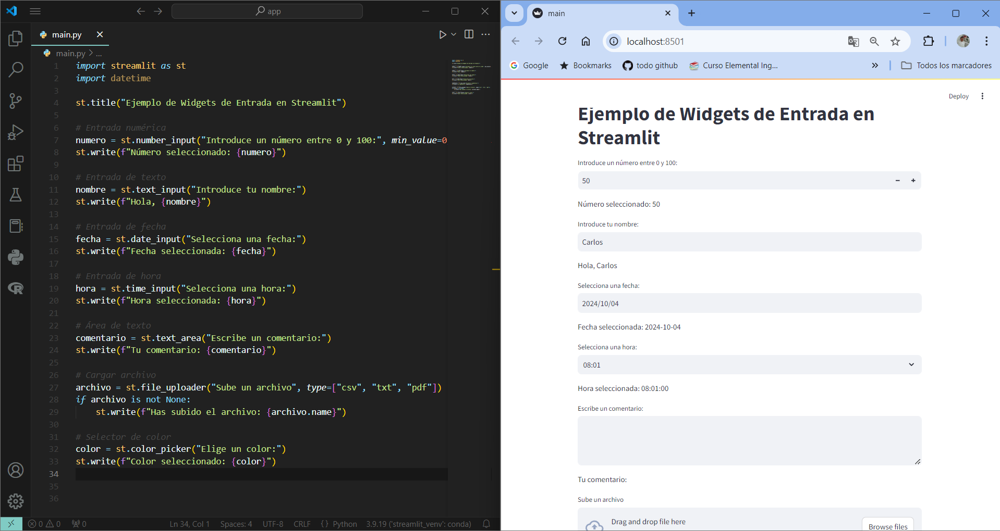
Visualización del progreso y el estado con Streamlit#
Ahora veremos cómo podemos agregar una barra de progreso y mensajes de estado como error y éxito a nuestra aplicación.
st.balloons(): Mostrar globos de celebración. Se utiliza para celebrar un evento o acción completada con éxito, mostrando animaciones de globos en la aplicación.st.progress(): Barra de progreso. Permite mostrar una barra de progreso para que el usuario pueda visualizar el avance de un proceso.st.spinner(): Mensaje de espera temporal. Muestra un mensaje de cargando mientras se ejecuta una tarea en segundo plano, indicando que algo está sucediendo.
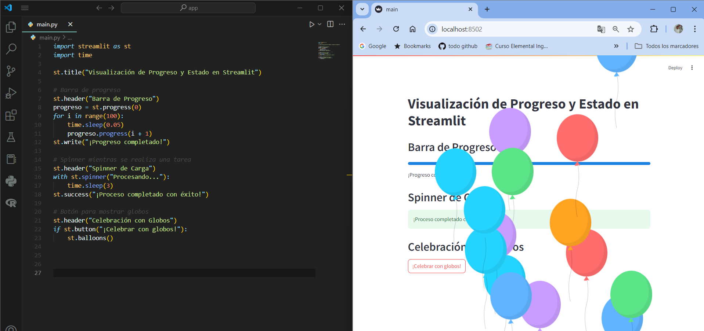
st.success(): Mostrar un mensaje de éxito. Este mensaje se utiliza cuando una operación o tarea se completa con éxito.st.error(): Mostrar un mensaje de error. Este mensaje se utiliza cuando ocurre un error en la aplicación o durante la ejecución de una tarea.st.warning(): Mostrar un mensaje de advertencia. Utiliza este mensaje para alertar al usuario sobre una posible advertencia, como configuraciones incorrectas o posibles problemas.st.info(): Mostrar un mensaje informativo. Este mensaje es ideal para proporcionar información adicional o contexto sobre lo que está sucediendo en la aplicación.st.exception(): Mostrar un mensaje de excepción. Esta función se utiliza para mostrar excepciones o errores de Python, proporcionando detalles sobre el error.
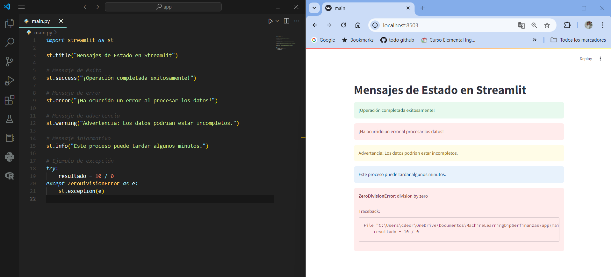
Barra lateral y contenedor#
En Streamlit, puedes utilizar la barra lateral para organizar mejor tu contenido y proporcionar a los usuarios una experiencia más intuitiva. Al usar st.sidebar, los elementos que agregues aparecerán en un panel lateral fijo a la izquierda de la aplicación. Esto es útil para menús, controles o configuraciones que no interfieren directamente con el contenido principal.
Veamos cómo usar la barra lateral y los contenedores para organizar tu aplicación.
Barra lateral con
st.sidebar: Cualquier componente que pases ast.sidebaraparecerá en la barra lateral. Puedes agregar títulos, sliders, botones y más en ese espacio.
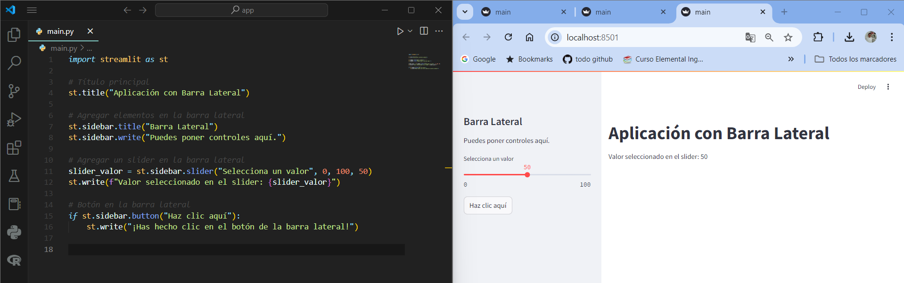
Contenedores con
st.container(): Los contenedores permiten agrupar elementos de manera ordenada dentro de tu aplicación. Puedes utilizarlos para estructurar mejor el contenido en secciones específicas.
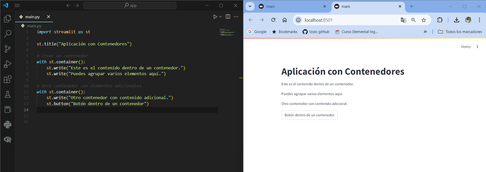
Un ejemplo completo es el siguiente
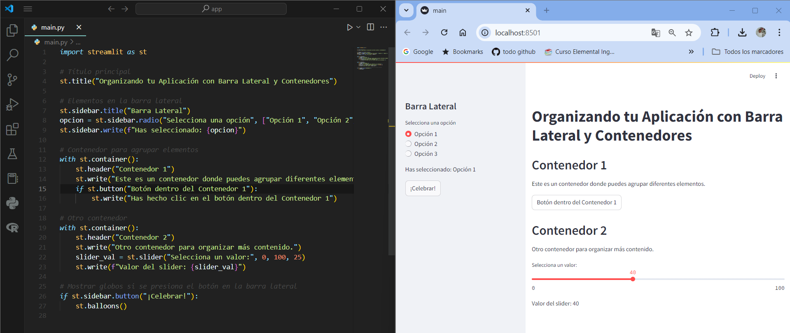
¿Cómo organizar el contenido?
Barra lateral: Ideal para menús, sliders, botones y configuraciones que no interfieren con el contenido principal.
Contenedores: Útiles para dividir tu aplicación en secciones claras y organizadas, manteniendo la interfaz limpia y fácil de seguir.
Visualización con Streamlit#
La visualización de datos es una herramienta poderosa para comunicar información compleja de una manera clara y accesible. Con Streamlit, puedes integrar fácilmente gráficos y visualizaciones dentro de tu aplicación para contar historias a partir de los datos. Vamos a ver cómo usar la función st.pyplot() para mostrar gráficos creados con Matplotlib, una de las bibliotecas más populares para la creación de gráficos en Python.
¿Por qué necesitamos la visualización de datos?
La visualización de datos nos ayuda a:
Detectar tendencias y patrones.
Identificar valores atípicos.
Resumir grandes cantidades de datos de una forma comprensible.
Facilitar la toma de decisiones basadas en datos.
Streamlit simplifica la integración de visualizaciones en aplicaciones interactivas, lo que permite a los usuarios interactuar con los gráficos de manera dinámica.
Uso de
st.pyplot(): La funciónst.pyplot()permite mostrar gráficos generados con Matplotlib en la aplicación de Streamlit. Primero creas el gráfico con Matplotlib y luego lo visualizas usando esta función.

st.line_chart()en Streamlit se utiliza para mostrar un gráfico de líneas de manera muy sencilla a partir de un DataFrame o una estructura de datos similar. Es una forma rápida y efectiva de visualizar series de tiempo o cualquier otro conjunto de datos en forma de líneas.
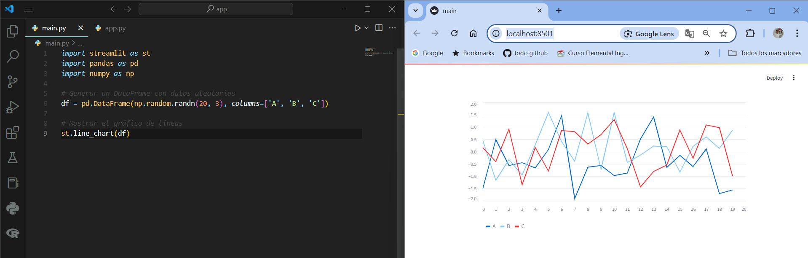
st.bar_chart()en Streamlit se utiliza para mostrar un gráfico de barras de manera rápida y sencilla a partir de un DataFrame o cualquier estructura de datos similar. Es ideal para visualizar datos categóricos o comparar valores de diferentes categorías.
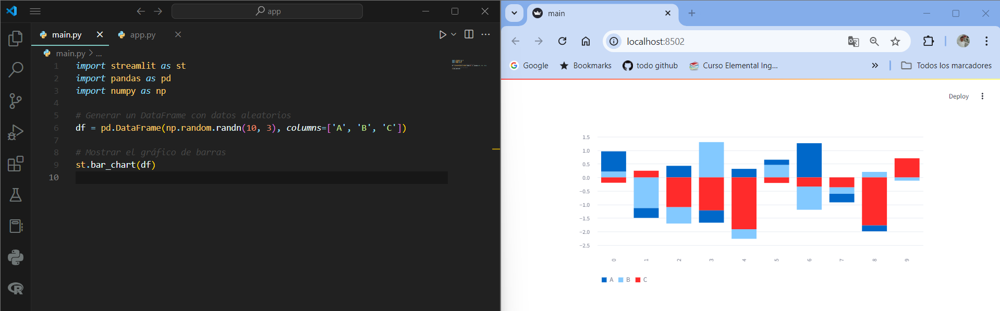
st.area_chart()en Streamlit se utiliza para mostrar un gráfico de área de forma rápida y sencilla. Un gráfico de área es similar a un gráfico de líneas, pero con el área debajo de la línea rellenada, lo que lo hace ideal para mostrar tendencias a lo largo del tiempo o la acumulación de valores.
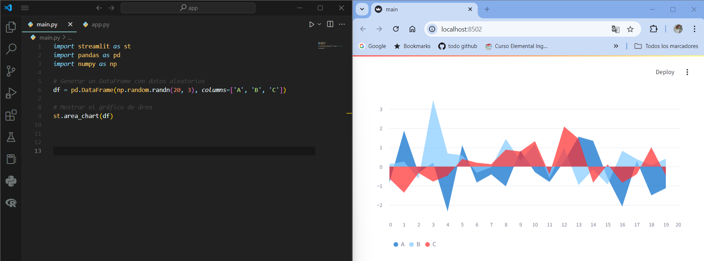
La función
st.altair_chart()en Streamlit se utiliza para mostrar gráficos creados con Altair, una biblioteca de visualización de datos declarativa en Python. Altair es conocida por su facilidad para crear gráficos interactivos y personalizados, ideal para mostrar visualizaciones complejas con un código relativamente simple.
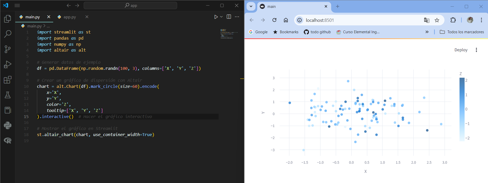
Visualización de mapas con Streamlit#
La función st.map() en Streamlit se utiliza para visualizar mapas interactivos, siempre y cuando tengas datos que incluyan latitud y longitud. Es una forma sencilla de mostrar puntos en un mapa sin necesidad de instalar bibliotecas adicionales como folium o plotly. Un ejemplo básico
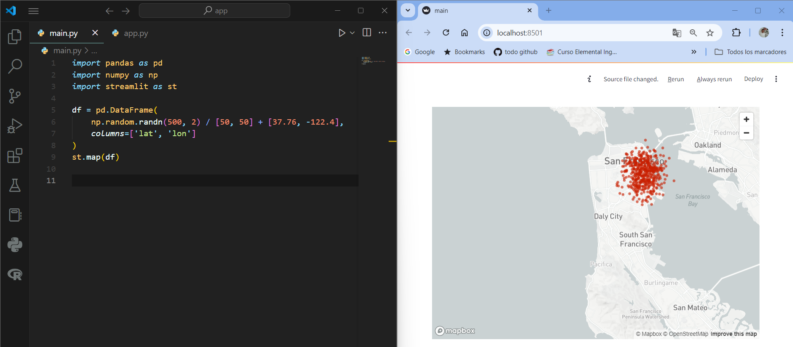
También puedes integrar mapas en la barra lateral con filtros interactivos, por ejemplo, permitiendo al usuario seleccionar un rango de latitudes y longitudes:
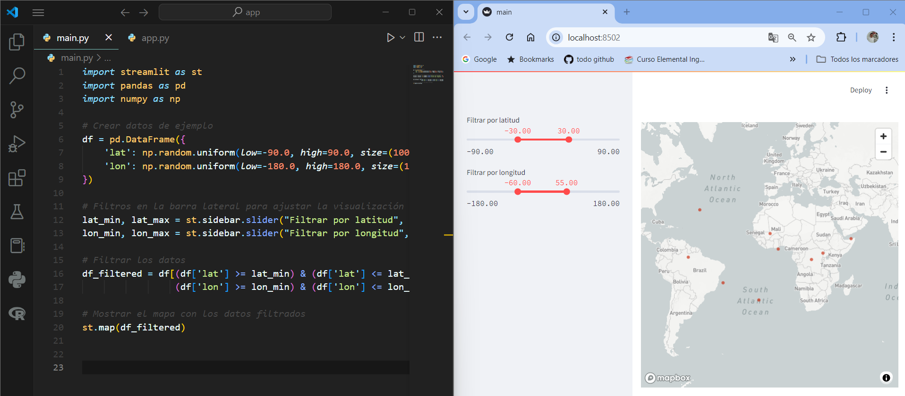